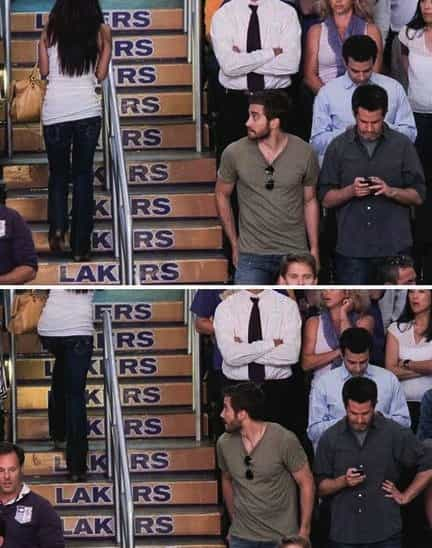

< < < Back
Three Crappy Mistakes I’ve Made As A Boyfriend – Return Of Kings
So you think you’ve got your woman on lockdown because your competence as a lover is so grand that the mere sight of you makes her privates all moist and tingly. With your confidence, masculine presence, and sexual powers, you’ve managed to enslave her with your cock. It’s a great feeling isn’t it? You’ve dedicated yourself to learning how her delicate, soft, and beautiful body reacts to your touches as you finger bang her through her pretty pink panties. You’ve communicated with her and found out what turns her on and what really turns her on, that nympho. She’s your little toy that you use as you please. Life is good.
Now, I want you to think about the other things you do in your relationships after you’ve given her the most amazing 30 seconds of her life with your 3 inches of fury, stud. As much as you wish it wasn’t true, a vast majority of the time you spend with her isn’t going to be with your cock punishing one of her orifices. What are some things you can do to avoid losing your precious little nympho during those times when you can’t display your coital powers? Here are some crappy mistakes I’ve made as a boyfriend.
Don’t Make Minimums, Maximums
You don’t cheat on, beat, or emotionally abuse your woman. Great, maybe you also want your cock sucked for not murdering someone, robbing a bank, or pushing old ladies down stairs. That’s not something to be proud of, it should be a standard that you hold yourself to. It’s what is expected out of you from a relationship, it’s not just a happy plus.
When is the last time you’ve done something to really make your woman feel special? Has it really been that long you can’t even remember? You’re fucking up. You don’t believe it matters, but it does. We’re not talking about some slut you pump and dump, but a person who you actually care about.
My ex was a very lovely Israeli woman and I would take a one and half hour bus ride to go see her. I’d do it twice a week, sometimes more. In my mind, I was doing a lot for her. I was going out of my way to see her all the time, that’s romantic right? Did it ever occur to me to buy her flowers, get her chocolates, or other cutesy crap girls like? Yes, it did, but I always failed to act upon it. I thought the trip I was doing was more than enough to show my love. I failed to acknowledge the subtle and not so subtle hints she gave that she wanted me to do more romantic things.
Don’t make the minimums your maximums. She is your woman, you’re expected to go out of your way to see her. You’re expected to take her out on occasion. You’re expected to tell her she is beautiful. Just because you do those things, doesn’t mean you can’t do more. You can buy her those flowers or surprise her with a sushi candlelight dinner on the balcony. You can send cute little love letters through the mail that will be reminiscent of by gone era before the invention of e-mail. Yes, the big things matter, but so do the little things. Strive to do way more than is required to be a good boyfriend.
There is a lazy human tendency we all tend to have where we become complacent. We grow comfortable in our relationships and start believing the just doing the minimum to show our love and devotion is enough. We already did all that romantic bullshit in the beginning, why do we need to keep on doing it? It’s established how we feel. Boredom sets in, gentlemen, and your little sex vixen will wonder why she is no longer worth your thoughtfulness and attention. She will become bored and disenchanted, and a woman bored and disenchanted is one in a position to over examine every detail of the relationship and what it has become.
The choice is yours, maybe she’ll stay loyal and break up with you cleanly, or maybe she’ll fuck around on you, but either is something you can avoid if you took those extra steps. If she does either anyways, fuck that bitch then, at least you gave it your all.
It’s Okay to Look, but Don’t Lie About It
I know some people are in an open relationship, which is cool, but that’s not how I roll. That doesn’t mean I don’t take the liberty to check out a hot piece of ass that is passing by. My girl and I would be walking along being a happy and loving couple, when all of sudden some chick with a generous breast size would come towards us. My eyes would focus on those huge tits, but being the tactful man I am my head or body movements would never give a hint. Then, she would pass by, I would wait three-seconds and turn around to check out the ass. I was a sly one.
I wasn’t. My girl noticed every single time. Your girl notices every single time. She probably will notice the chick before you and thus knowing your tastes, will know she is the kind of eye candy you go after. She will then begin to sense any type of movements or subtle changes you make in your misguided effort to masquerade eye-fucking another chick.

Now, the part the truly pisses her off is not the fact that you’re checking out other chicks, but that you’re making a pathetic attempt to hide it. You really think your girl is that clueless that she won’t notice you eye-fucking every fine piece of ass the passes by? Don’t insult her intelligence.
The best thing to do is to be honest about it. It’s natural for you as a man to be attracted to other women (and she to other men.) Its part of our genetic make up. If you have a traditional type relationship, make sure to follow the age-old rule: look, but never touch. As long as your woman isn’t the overbearing, jealous type she won’t mind too much if you look so long as you don’t do anymore than that. Honesty is the key.
Who knows, if you tell her what kind of girls you’re attracted to, she’ll be more inclined to suggest some extra naughty things in the sack and maybe, dare you dream, suggest a threesome. Most likely not though, but it’s always nice to fantasize about it.
Easy on the Criticism
You like big 36DD sized boobs, but your girl has a respectable, but slightly smaller sized 36C. You know what is not a great idea? Telling her that maybe she should get breasts implants. Yes, I said that, and yes, I am an idiot.
By criticizing her body, you have undermined her self-confidence, and thus her willingness to be your little sex vixen. How is she suppose to feel sexy wearing that silk red lingerie she bought just for you if you told her you prefer big floppy boobs over her nice and perky ones? It’s the equivalent of her saying she prefers a cock that is only a couple of inches larger than yours.
Seriously, think about that for a moment. Your woman who you love so dearly, just told your cock is just a bit too small. How good do you feel about yourself? Do you feel adequate? Do you feel like a man? I bet you don’t. You are doing the same thing to her by criticizing her slight lack of breasts size. You are making her feel bad, inadequate, and unfeminine. Pretty easy to make her pussy dry up like Death Valley. Kind of a fucked up thing to do to the person you love.
As long as your woman isn’t obese, getting obese, or disgusting (why would she be your woman if she was?), make her feel comfortable in her body. Her body has a special uniqueness that only belongs to her. Part of the fun of fucking a woman is that you get to feel every inch of her. Your hands have free to reign to run wild all over her body and feel how her special curves line up. Enjoy it, because they are a part of her and most likely, you’re never going to fuck a girl that looks perfectly like her again.
Make it known that you love to ravage every inch of her body and keep your hyper critical and non-constructive comments to yourself. You’ll get so much more in return. Otherwise, you’ll be back to jerking off to porn with girls with 36DD in no time.
Read More: 4 Common Mistakes That Kill Your Game